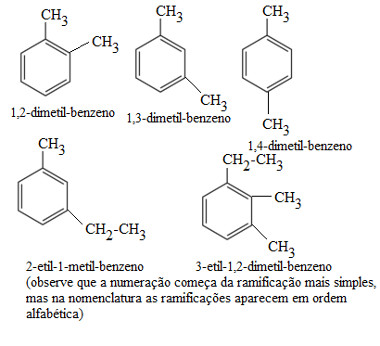
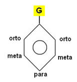
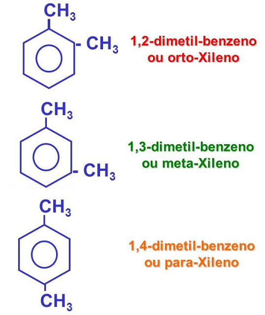
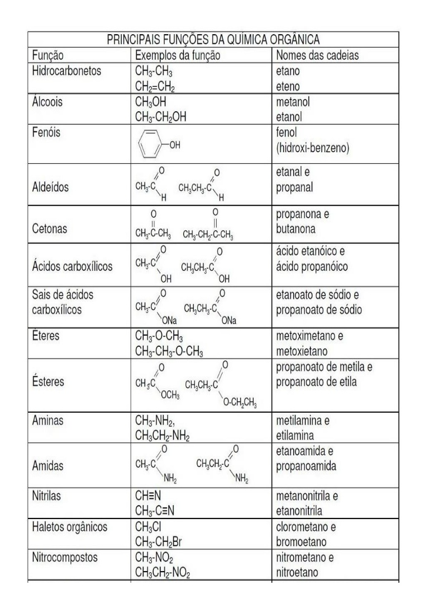

| Prefixo - Início | Infixo - Centro | Sufixo - Final |
|---|---|---|
| 1c - Met | Lig. Sim. - an | HC - O |
| 2c - Et | - | - |
| 3c - Prop | 1 Lig. Dup. - en | Álcool - Ol |
| 4c - But | - | - |
| 5c - Pent | 1 Lig. Trip. - in | Aldeído - Al |
| 6c - Hex | - | - |
| 7c - Hept | 2 Lig. Dup. - Dien | Cetona - Ona |
| 8c - Oct | - | - |
| 9c - Non | 2 Lig. Trip. - Diin | Ácido Carboxílico - Óico |
| 10 - Dec | - | - |
Para cadeias insaturadas com 4 carbonos ou mais, devemos indicar a posição da insaturação.
A posição (numeral) da insaturação deverá ser a mais próxima de uma das extremidades da estrutura (cadeia).
O número que indica a posição da insaturação estará entre o prefixo e o infixo da regra Iupac.
Veja abaixo alguns exemplos de todas as regras citadas:
Primeiramente, deve-se identificar a cadeia principal.
Cadeia Principal é a maior sequência carbônica ligada, apresentando:
Cadeia mais ramificada é a com maior quantidade de radicais.
Veja abaixo um resumo de como aplicar a teoria:
Agora, veja uma aplicação em exemplo:
Seguindo as regras citadas, o nome da cadeia acima é:
A seguir, uma tabela com os principais radicais e seus respectivos nomes:
| Radical | Carbonos | Nomes |
|---|---|---|
| CH2--CH3 | 1C | Metil |
| CH2--CH2--CH3 | 2C | Etil |
| CH--CH3 | 3C | Propil |
| CH3 | 3C | Isopropil |
Regra Iupac: Prefixo (Quantidade de carbonos) + IL
- Na contagem de carbonos (determinação da cadeia Principal) e na organização do nome IUPAC, representa-se a ordem alfabética dos nomes dos radicais.
- Quando se tem 2 ou mais radicais iguais, usa-se uma tabelinha para simplificação do nome. Veja:
| Prefixo | Quantidade |
|---|---|
| 2 | Di |
| 3 | Tri |
| 4 | Tetra |
Na tabela acima, prefixo corresponde a quantidade de radicais iguais e quantidade corresponde ao nome que será usado para demonstrar essas quantidades.
Exemplo: 2,3,4,5 - Tetrametilhexano
- Caso se tenha 2 ou mais radicais iguais e diferentes, o prefixo de quantidade não irá participar da ordem alfabética, ou seja, a posição maior poderá vir primeiro no nome, caso seja a diferente.
Exemplo: 4-Etil-2,3-Dimetilhexano
As regras são as mesmas da nomenclatura de cadeias abertas.
Existem prioridades na hora de dar o nome:
Os nomes irão sempre possuir "ciclo em sua composição".
Veja alguns exemplos:
Os nomes são construídos através da cadeia principal (aromática).
As posições dos radicais determinam qual será o início do nome, veja:
Veja a distribuição dessas posições no benzeno:
Veja agora aplicações dessa regra, em exercícios:
OBS: Dimetil-benzeno = xileno
Grupos Funcionais: Conjuntos de heteroátomos que caracterizam as diferentes funções orgânicas.
Veja agora uma tabela com as principais funções, seus exemplos e nomes:
ATENÇÃO! O que determina qual é a função orgânica, não é a hidroxila, mas sim, em qual carbono a hidroxila está ligada.
Agora, coloque em prática o conteúdo aprendido!
1 - Construa a fórmula estrutural dos HC's abaixo.
a) 3,3 - dietil - 4 metiloctano
b) 2 - isopropil - 4 - metilhex - 1 - eno
c) 2,3,3 - trimetilhex - 1,5 - dieno
d) 2,2,4 - trimetilpentano
e) Metilciclohexano
f) 3 - etil - 4,4 - dimetilhex - 2 - eno
f) 2- etil - 3 - meticiclohexano